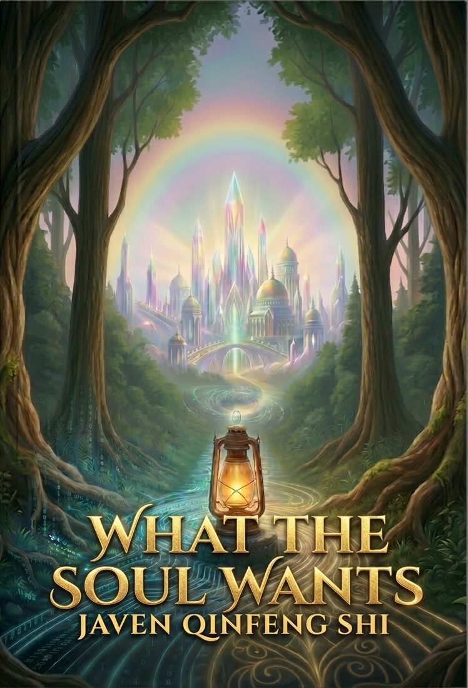
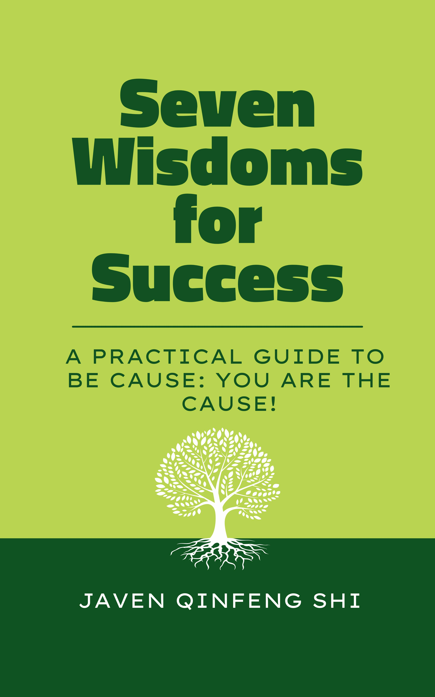
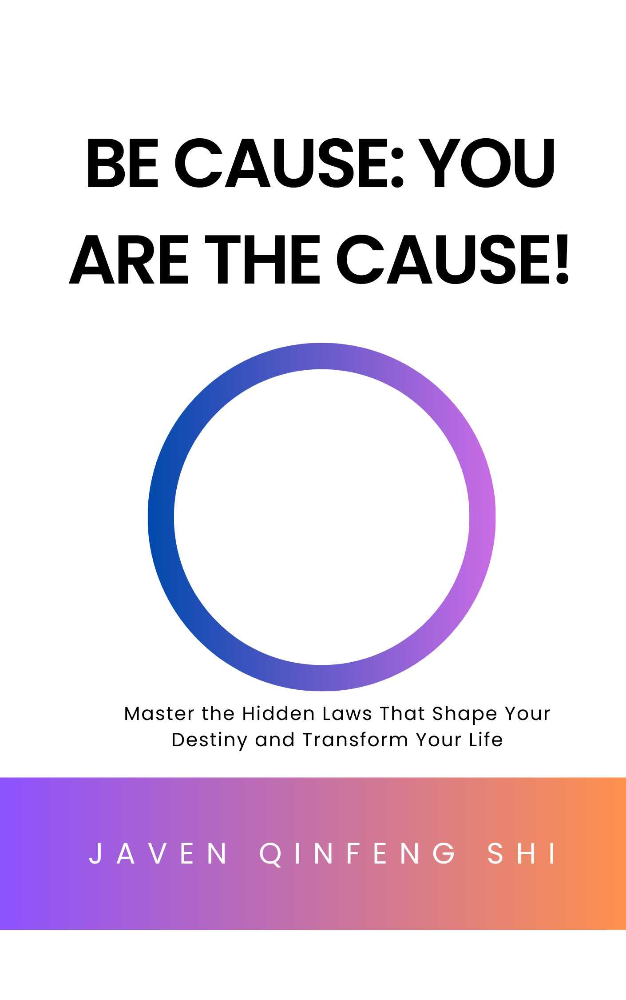

Professor Javen Qinfeng Shi
Author of Be Cause: You Are the Cause! & Seven Wisdoms for Success & What the Soul Wants
Director, Causal AI Group · Interim Director, Responsible AI Research Centre (RAIR)
Director of Advanced Reasoning and Learning, Australian Institute for Machine Learning (AIML)
Professor, Adelaide University

📖 New Book Release: What the Soul Wants
Timeless Principles for Living, Abundance, and Meaning in the Age of AI
What the Soul Wants offers a lantern for seeing clearly through illusion, distortion, and uncertainty in times of rapid change. As technologies like artificial intelligence reshape work, identity, and society, this book helps you discern what is true, what is false, and what genuinely matters. While grounded in the age of AI, its purpose is timeless. It illuminates inner principles that remain true no matter how the world evolves.
Available now on Amazon:

📖 Book: Seven Wisdoms for Success
A practical guide to becoming the true cause of your success.
This companion to Be Cause: You Are the Cause! distills its rich insights into seven actionable wisdoms for immediate application. Whether mastering inner patterns, aligning with your Dharma, or transforming fear into purpose, this guide is your portable source of success and clarity.
Available now on Amazon:

📖 Book: Be Cause: You Are the Cause!
A transformative guide to causality, destiny, and self-mastery.
In Be Cause: You Are the Cause!, Professor Javen Qinfeng Shi reveals the hidden laws that shape our lives, blending cutting-edge AI, spiritual wisdom, and metaphysical insights. Perfect for readers of self-help, metaphysics, and consciousness studies who seek to master their destiny.
Available now on Amazon:
News
- What Makes a Good Representation for Single-Cell Perturbation Prediction?
- The Geometric Mechanics of Contrastive Representation Learning: Alignment Potentials, Entropic Dispersion, and Cross-Modal Divergence,
- Boundary Embedding Shaping with Adaptive Contrastive Learning for Graph Structural Disentanglement
- I Predict Therefore I Am: Is Next Token Prediction Enough to Learn Human-Interpretable Concepts from Data?, accepted to ICLR 2026
- Beyond DAGs: A Latent Partial Causal Model for Multimodal Learning, accepted to ICLR 2026
- Identifying Weight-Variant Latent Causal Models, accepted to JMLR
Research
Professor Javen Qinfeng Shi is an AI professor and metaphysican bridging cutting-edge AI with the inner mysteries of consciousness. His research spans causality, AI, mind, and metaphysics. He is a recipient of the ACM SIGIR 2025 Test of Time Award and the Open Catalyst Challenge at NeurIPS AI for Science 2023, where his team used AI to discover new energy materials.
🎤 Invite Me to Speak
Please share your event details and speaking fee budget below:
Contact
📧 Email: javen.shi [at] adelaide.edu.au